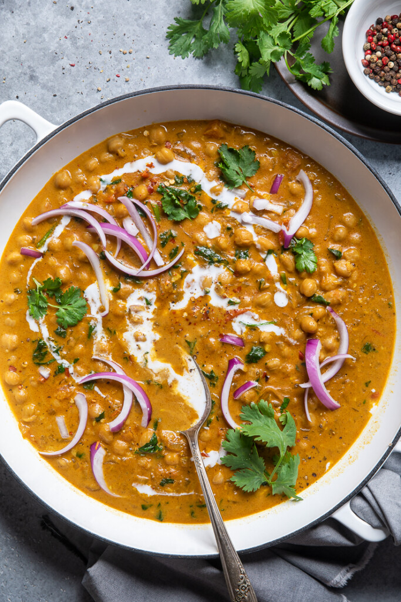

Curry Recipe

Vegan Curry
This easy vegan chickpea curry is quick and simple, yet packed with so much flavorful. You’ll be amazed at how good it is!
Curry is the one of the easiest and most flavorful dinners that you can make and this easy vegan chickpea curry is no exception.
Ingredients
- 1 tablespoon olive oil
- 1 yellow onion, diced
- 5 cloves garlic, minced
- 4 fresh thyme sprigs
- Ginger
- Tomatoes
- Coconut cream
- Chickpeas
- curry powder
Instructions
- Heat pan and add olive olive
- Dice onions and add to pan. Cook until translucent.
- Mince garlic anf ginger and add to pan. Cook for 1-2 minutes.
- Add curry powder and thyme. Cook and stir for 1 minutes and then stir in the tomatoes
- Add coconut cream and chickpeas and bring to a boil
- Once bioling, reduce to a simmer and let cook for 10 minutes stiring occasionally.
- Season to taste and serve with freshly cooked rice and a dulop of yoghurt.